Amb el teu agent o sense programar
Crear
Tria un aspecte de consola i demana-ho al teu agent de codi, o dibuixa'l i posa-li regles a l'editor. Quan estigui a punt, puja'l a la Biblioteca.
Fes-te un joc
pinyol està pensat per fer-lo servir amb un agent de codi, com Codex o Claude Code. L'agent llegeix les instruccions del repositori, instal·la el que falta, segueix la recepta de l'aspecte que demanis i prova el joc abans de donar-te'l.
Baixa el motor
En un Mac amb Homebrew o a Linux.
git clone https://github.com/ipaud/pinyol.git cd pinyolDemana-ho al teu agent
Obre la carpeta amb el teu agent i digues-li què vols, en el teu idioma.
Fes-me un joc de plataformes amb aspecte de Game Boy: un ratolí que busca formatge en una biblioteca.Juga-hi
A l'ordinador, o passa'l a la consola per USB.
./build/pinyol_sim --game games/raton
Dotze aspectes, un motor
Cada cartutx és un exemple jugable amb les regles de la seva consola: la resolució, els colors, les capes. Es juga amb el teclat (fletxes i Z, X) o, al mòbil, amb els botons de la pantalla. Els fps es van mesurar a la consola real, en plena partida.
-
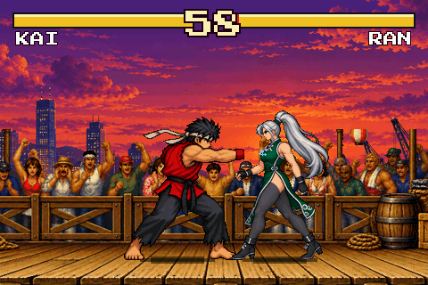
1990 · lluitadors enormes
Neo Geo
Combat un contra un en un moll a la posta de sol.
- 60–61 fps a la consola
- art generat amb IA
-
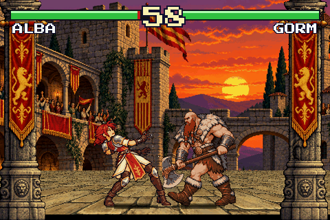
1993 · quinze colors per lluitador
CPS2
Combat sobre un terra en perspectiva dibuixat en bandes.
- 60–61 fps a la consola
- art generat amb IA
-
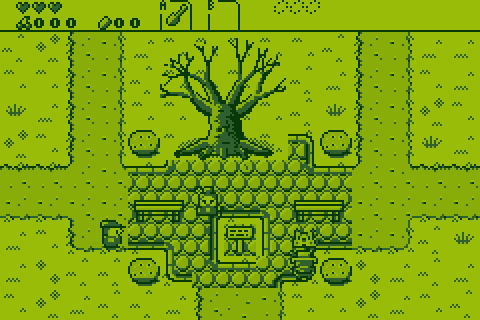
1989 · quatre verds, pantalla completa
Game Boy
Un joc de plataformes amb la paleta de la Game Boy, a pantalla completa.
- 58–61 fps a la consola
- dibuixat amb codi
-
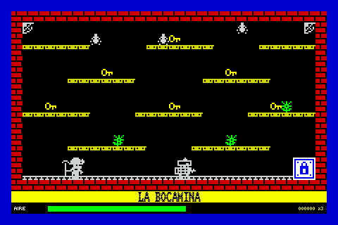
1982 · dos colors per bloc
ZX Spectrum
Amb la càrrega de cinta, franges de colors i tot.
- 41–62 fps a la consola
- dibuixat amb codi
-
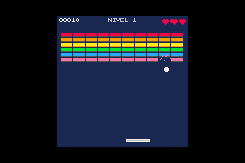
2015 · 128×128 · setze colors
PICO-8
Un trencamaons amb la paleta d'aquesta consola de fantasia.
- 47–60 fps a la consola
- dibuixat amb codi
-
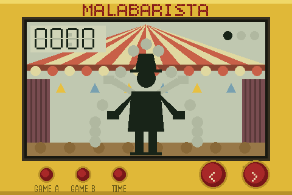
1980 · figures que s'encenen
Maquineta LCD
Un cuiner que recull ous i es mou figura a figura.
- 60–61 fps a la consola
- dibuixat amb codi
-
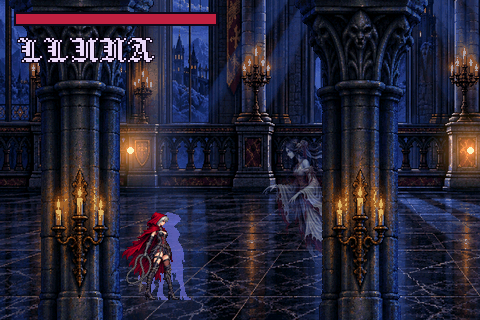
1997 · 256 colors, llums translúcides
PlayStation · Saturn 2D
Un castell de nit: espelmes que brillen i un fantasma mig transparent.
- 60–61 fps a la consola
- art generat amb IA
-
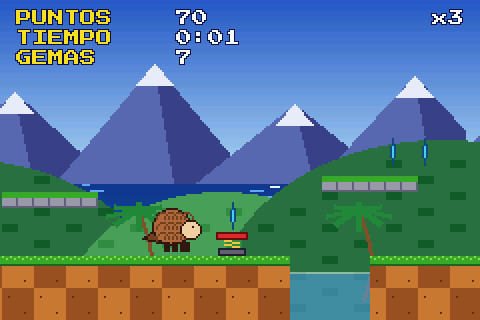
1991 · velocitat i desplaçament per línia
Super Nintendo · Mega Drive
Un pangolí molt ràpid i un mar que es mou línia a línia.
- 40–59 fps a la consola
- dibuixat amb codi
-
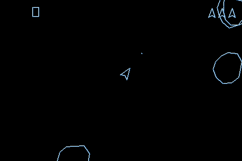
1979 · només línies que brillen
Vectorial
Roques i una nau fetes de línies sobre negre.
- 61 fps a la consola
- dibuixat amb codi
-
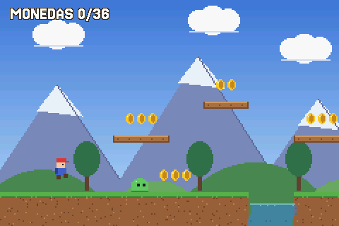
2001 · capes, sprites, aigua que ondula
Game Boy Advance
Muntanyes en paral·laxi, aigua transparent i monedes.
- 61 fps a la consola
- dibuixat amb codi
-
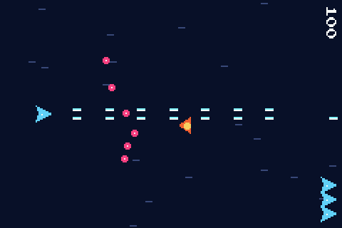
1985 · la pantalla girada
Recreativa vertical
Un matamarcians per jugar amb la consola de costat.
- 30 fps a la consola
- dibuixat amb codi
-
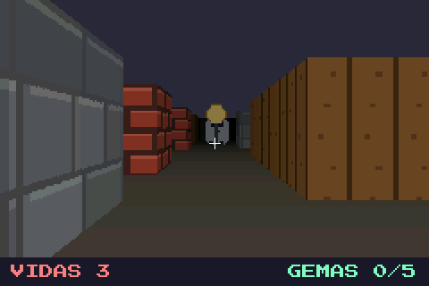
1992 · a l'estil de Wolfenstein 3D
Primera persona
Un laberint vist des de dins, amb fantasmes i gemmes.
- 38–60 fps a la consola
- dibuixat amb codi
Sense programar · al navegador
L'editor
Dibuixa els personatges píxel a píxel, pinta els mapes, defineix les regles amb blocs i juga-hi a l'instant. Comença de zero o a partir d'una plantilla, com Abella o LÍNEA 0.
- Aspecte de consola Game Boy, Game Boy Advance, PICO-8, ZX Spectrum o 16 bits: els seus colors i la seva tipografia
- Dibuixos que es mouen píxel a píxel, amb animacions per estar quiet, caminar o rebre un cop
- Regles amb blocs vides, compte enrere, diàlegs, rècords que es desen
- So efectes a partir de receptes, música composta en una quadrícula o un .mod
- A la consola pel cable USB o en un .zip per a la targeta
- En tres idiomes castellano, català i English
L'escala: cinc encàrrecs
Del més senzill al més difícil. Un clon net del repositori, un sol missatge per encàrrec i sense respondre cap pregunta: Codex va llegir AGENTS.md, va compilar el motor, va seguir la recepta de l'aspecte i va escriure un guió que juga al joc, fins que la prova va sortir bé. Després es va mesurar cada joc a la consola, amb aquell mateix guió. Amb Codex 0.155 i gpt-6-sol, raonament mitjà. (Els encàrrecs es van escriure en castellà; aquí, traduïts.)
| 1 · Paletes | 3 min 30 s · 61 fps |
|---|---|
| 2 · Ratón de biblioteca | 4 min 49 s · 59 fps |
| 3 · Oxígeno 48K | 5 min 2 s · 30–60 fps |
| 4 · Museo de medianoche | 6 min 8 s · 42 fps |
| 5 · Ardilla Relámpago | 18 min 34 s · 59 fps |
-

Nivell 1 · Vectorial
Paletes
Fes-me un Pong contra la consola: dues pales, una pilota i un marcador fins a 7 punts. No em preguntis res, decideix tu.
- 3 min 30 s
- 29 ordres
- 73 mil tokens
- 61 fps a la consola
Sense retocs.
-
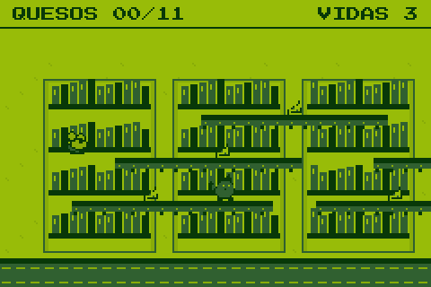
Nivell 2 · Game Boy
Ratón de biblioteca
Fes-me un joc amb aspecte de Game Boy: un ratolí que recorre una biblioteca saltant entre prestatgeries i recollint trossos de formatge, amb gats que patrullen. Que funcioni i faci goig. No em preguntis res, decideix tu.
- 4 min 49 s
- 29 ordres
- 78 mil tokens
- 59 fps a la consola
Retocat després: a pantalla completa, sense el marc de consola.
-
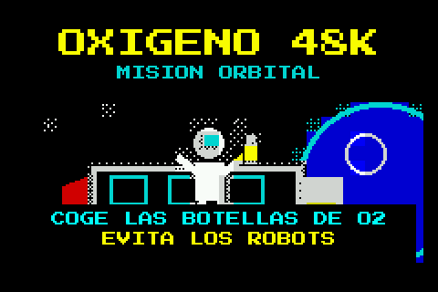
Nivell 3 · ZX Spectrum
Oxígeno 48K
Vull un joc amb aspecte de ZX Spectrum, amb la seva pantalla de càrrega de cinta: un astronauta que, en una estació espacial, recull bombones d'oxigen abans que se li acabi l'aire i esquiva robots. No em preguntis res, decideix tu.
- 5 min 2 s
- 40 ordres
- 104 mil tokens
- 30–60 fps a la consola
Retocat després: el títol de la portada i els textos, perquè quedin dins dels quadres.
-
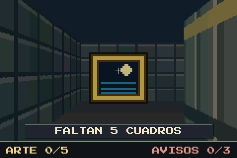
Nivell 4 · Primera persona
Museo de medianoche
Fes-me un joc en primera persona a l'estil de Wolfenstein: un museu de nit, busques cinc quadres robats mentre esquives els vigilants. No em preguntis res, decideix tu.
- 6 min 8 s
- 33 ordres
- 84 mil tokens
- 42 fps a la consola
Retocat després: el text de la pantalla final.
-
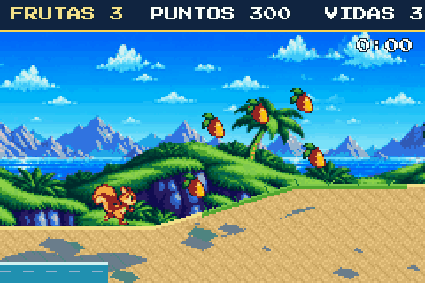
Nivell 5 · Mega Drive
Ardilla Relámpago
Fes-me un joc de plataformes de velocitat amb aspecte de Mega Drive: un esquirol que corre per una costa amb rampes i bucles, diverses capes de fons que es moguin a velocitats diferents, el mar del fons que onduli línia a línia, enemics i fruita per recollir. Que vagi ràpid i faci goig. No em preguntis res, decideix tu.
- 18 min 34 s
- 102 ordres
- 252 mil tokens
- 59 fps a la consola
Tres encàrrecs: el joc (4 min 41 s), l'art generat amb IA (10 min 8 s; aleshores anava a 30 fps) i fer-lo anar a 60 a la consola amb un terra propi (3 min 45 s). Sense retocs a mà.
Puja'l a la Biblioteca
Quan el teu joc estigui a punt, puja'l amb el formulari: un robot l'obre i el juga deu segons, i quan l'hàgim revisat es podrà jugar al web i descarregar per a la consola.
Alguna cosa teva publicada aquí sense el teu permís, o alguna cosa que no hi hauria de ser? Demana que ho retirem (s'obre en una pestanya nova).